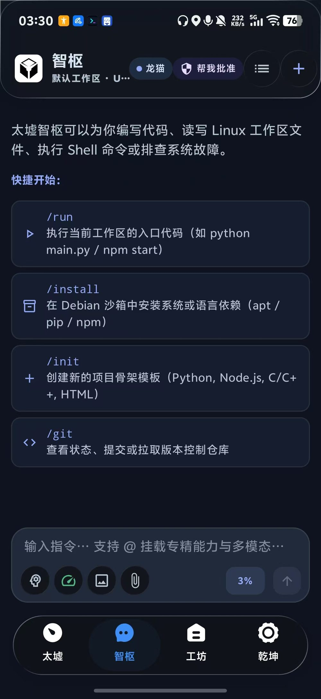
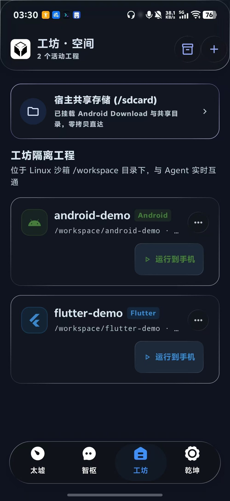
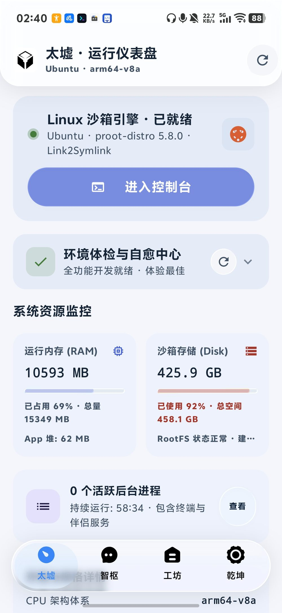

可运行
PRoot、真实 PTY 与持久化工作区。进程会启动，文件会写入，构建会产出安装包，而不只是停在回答里。
ANDROID · PRoot LINUX · AI AGENT
掌中归墟，万象可期。
无需 Root，在 Android 上运行真实 Linux 沙箱。让 Agent 读写代码、调用工具、验证结果，与终端、工作区、Git 和自动化工作流共用同一片执行空间——从一句意图，抵达可交付的产物。

01缘起
《列子·汤问》里，渤海之东有壑，其下无底，名曰归墟，八纮九野之水莫不注之。太墟取意于此：在 Android 的应用沙盒与权限边界之内，构筑一方可运行、可观测、可恢复、可演进的 Linux 与 AI 自动化环境。
PRoot、真实 PTY 与持久化工作区。进程会启动，文件会写入，构建会产出安装包，而不只是停在回答里。
计划、工具调用、行级 Diff、运行历史与网络时间线都留下轨迹。你可以随时看见正在发生什么，并在需要时介入。
会话、任务与操作状态持久化；文件检查点与对话回退让中断不必从零开始，让每一次尝试都可以撤回。
02能力
从运行环境到智能体，从工具执行到工程构建，太墟把分散的能力编织成一条完整的链路：意图进入系统，行动抵达文件与进程。
基于 PRoot 运行 ARM64 Linux 用户空间，RootFS 从 OCI 镜像安装并校验。支持多发行版共存、切换与回滚，可把 Android 共享存储挂载进沙箱。
兼容 Chat Completions、Responses 与 Anthropic Messages；统一处理流式正文、推理、函数调用、视觉输入与上下文压缩。
任务计划 · 子智能体 · 语义记忆 · 未完成则继续
JNI 后端通过 openpty、fork、setsid 与 execve 创建控制终端，支持多会话、Ctrl+C 和窗口尺寸变化。
新建项目、导入 ZIP 或克隆 GitHub 仓库；浏览源码与行级 Diff，在沙箱内后台构建，签名并安装 APK。
基于 JGit 直接管理宿主工作区：暂存、提交、分支、标签、提交图与推送预览，Token 加密保存。
多标签 WebView 池与 Browser MCP，让 Agent 读取页面、点击交互；页面 Hook、CDP 断点与网络时间线支撑进一步调试。MCP 支持 STDIO、Streamable HTTP、legacy SSE 与 OAuth PKCE。
.txplugin v2 以 PROCESS 包承载命令与服务，以 WEB 包承载受限页面；版本、依赖与 SHA-256 校验，能力逐项授权。
同一个运行时里，创建、评审与协作可以换一种发生方式。
03团队
为 Bot 设置角色与模型，在私聊里深入，在群聊里推进。主控统筹目标，@ 提及完成路由，成员各自持有独立任务与会话。
每位成员可以选择已配置的供应商与具体模型，把合适的任务交给合适的角色。
按轮次推进，PASS 与 @ 接力让讨论不抢话；审批发生时让出执行权，回来再继续。
把独立任务分给不同成员，各自保留上下文与产物；写路径租约降低并行修改的冲突。
任务状态、成员回报与像素办公室视图，让一支 Agent 团队像一间亮着灯的工坊。
这周把发版说明整理完，顺手补一版官网。
拆成三件事：核对产物、整理变更、起草文案。@ 开发 @ 文案
已核对 APK 与 SHA-256，清单写入 build/verify.md。
初稿已提交，等待评审意见。
04工作流
用持久化 DAG 连接命令、后台进程、Agent、子智能体、构建与人工审批。条件分支、并行节点与运行历史，让重复的事有据可依。
流程示意 · 实际节点与审批策略以应用内配置为准
05界面
智枢处理对话与任务，工坊承载项目与构建，乾坤管理模型与运行环境。以下为 Android 实机截图，界面布局以当前版本为准。


06边界
太墟把 Agent 视为会长期运行、真实修改工作区的执行系统，而不只是一次性的问答接口。
write_file
app/src/main/java/…/Runtime.kt
该操作将写入 214 行内容。审批仅对本次调用生效。
界面示意 · 会话授权与全局策略分离
需要知道的限制
07上手
准备一台 ARM64、Android 10 以上的设备，预留足够存储与网络。RootFS 不内置，首次初始化会下载镜像。
从 Releases 下载最新版本，建议核对页面提供的 SHA-256。
跟随启程向导选择发行版，默认推荐 Ubuntu 24.04 LTS，等待 RootFS 就绪。
添加云端服务或 OpenAI-compatible 本地端点，例如 llama.cpp、Ollama 类型服务。
新建项目、导入 ZIP 或克隆仓库，然后在智枢里描述你的第一个目标。
08问答
不需要。Linux 环境基于 PRoot 在用户态运行，不依赖 Root 权限；宿主自动化能力则取决于你是否授予无线 ADB、Shizuku 或无障碍等权限。
当前仅支持 arm64-v8a 架构、Android 10（API 29）及以上，推荐 Android 12+。复杂 TUI、软键盘组合键与重型交叉编译会受到设备性能、内存与 PRoot 兼容性影响。
镜像体积大且更新频繁，因此从 OCI Registry 按需下载并校验。这样可以支持多发行版共存，也让 APK 保持相对轻量；代价是首次安装需要网络和额外存储。
可以。任何提供 OpenAI-compatible Chat Completions 或 Responses 端点的服务都可以接入；沙箱内或局域网中的 llama.cpp、Ollama 类型服务同样适用。
它不是电脑的替代品，而是把验证、调试与轻量构建带到移动场景。项目可导入、可构建、可交付 APK；重型编译与长时间任务仍更适合放在电脑或远程 Linux 上，太墟也可以通过 SSH 连接过去。
本地 ZIP 涵盖会话、记忆、计划、技能资源、附件与可移植偏好；不包含 RootFS、工作区实际文件、API Key 与自定义请求头。模型档案可单独导出，选择包含凭据时会以明文写入，需要自行保管。